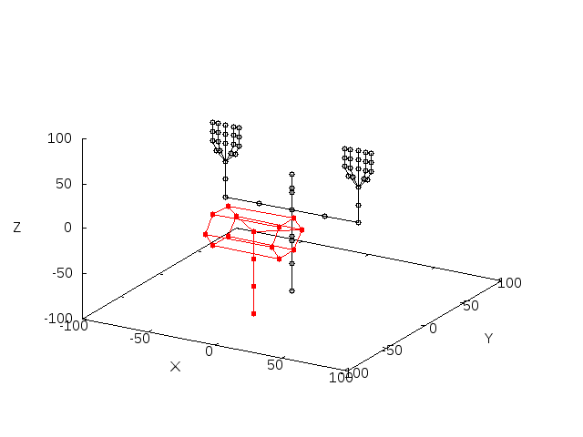
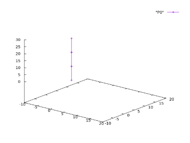
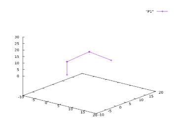

関節独立型運動学計算法の実践ガイド

本ツールは、Linux環境で動作するロボット逆運動学計算ソフトウェアです。Linuxの共有メモリにロボットのジョイントデータを読込み、コマンドにより順／逆運動学計算や表示データの出力等を行います。
GitHubにあるソースファイルをダウンロードし、ビルドします。 make install は /usr/local/bin にコマンドをコピーします。必要がなければ make install ; make clean はしなくても構いません。何れにしても、コマンドの場所にはパスを通しておいてください。
git clone https://github.com/Drinco2014/JIFCSet cd JIFCSet/bin make sudo make install make clean
ロボット構造はテキストで記述します。
#0 0.0 0.0 0.0 ← 位置 0.0 0.0 1.0 ← 軸方向 -1.57 1.57 ← 可動範囲 1 -1 ← 上位接続 -1 ← 下位接続 0.01 0.01 ← パラメータ 0x00 ← 回転ジョイント
以下の内容をコピーして 3arm.dat として保存してください。
4 #0 0.0 0.0 0.0 0.0 0.0 1.0 -999.9 999.9 1 -1 -1 0.3333 0.3333 0x00 #1 0.0 0.0 10.0 1.0 0.0 0.0 -999.9 999.9 2 -1 0 -1 0.3333 0.3333 0x00 #2 0.0 0.0 20.0 1.0 0.0 0.0 -999.9 999.9 3 -1 1 -1 0.3333 0.3333 0x00 #3 0.0 0.0 30.0 0.0 1.0 0.0 -999.9 999.9 -1 2 -1 0.3333 0.3333 0x00
→ 各リンク長は10で直列接続された3リンクアーム
$ LoadRobo 100 ./3arm.dat
$ PosePlotS 100 > P0 $gnuplot ・・・・・ ・・・・・ splot "P0" with linespoints

$ RoboCnt 100 1 3 10 10 10 8.493024e-06 0.002099 sec 126 times 8.493024e-06 8.493024e-06 3 8.493024e-06
標準入力から、位置決めするタスク点（ジョイントの１つ）の数とタスク点のジョイント番号に続けて目標座標を入力します。
入力する値をテキストファイルに準備して、 RoboCnt 100 < p1.txt のようにリダイレクションを使うと便利です。
$ OutPutTh 100 -45.001327 -45.001372 -90.002591 0.000000

コマンドは、Linuxコマンドと同様なので、スクリプトにして連続的な姿勢計算を行うことができます。
LoadRobo <キーコード> <ロボットの構造データファイル名>
キーコード：キーコードは１台のロボットのデータを読み込む共有メモリの識別子であり、このコードを変えることで複数台のロボットも取り扱うことができる。以下は、使用例。
$ LoadRobo 100 UpperBody.dat
UpperBody.datに記述されているロボットの構造データをキーコード100でメモリにロードする。データを消去するときは、以下の共有メモリの消去コマンドを使用する。
$ ipcrm -M <キーコード>
RoboCnt <キーコード> ( < -d > < -s 数字>)
キーコードで指定されるロボットの逆運動学計算を行う。標準入力からタスク点（位置決めするジョイント）の数、タスク点の番号と目標座標をタスク点数分入力する。リダイレクションを使ってファイルのデータを入力すると便利である。
-d オプションを指定すると、局所逆運動学計算がタスク点であるジョイントで終了する（分担モード）。指定していなければ、ベースまで計算が進む（混合モード）。
-s オプションはその後に＜数字＞が続き、タスク点から下位＜数字＞分の局所逆運動学計算で終了する。
以下は、使用例。この例では、2つのジョイントを位置決めするための姿勢を求める逆運動学計算を実行している。
$ RoboCnt 100 2 4 50 -20.0 100 10 -50 -20.0 0 $
標準入力で入力する値をテキストファイルに書き、リダイレクションで読み込ませるのが以下の例である。
$ RoboCnt 100 < FP31.txt
以下の例では、 -d オプションを指定しているので、タスク点であるジョイント10に対する局所逆運動学計算は、下位のタスク点であるジョイント４の計算が終わると下位のジョイントの計算は行わない。つまり、ベースであるジョイント０から３までで、下位のタスク点であるジョイント４の位置決めを行い、ジョイント４から９までのジョイントで、上位のタスク点であるジョイント１０の位置決めを行う。
$ RoboCnt 100 -d 2 4 50 -20.0 100 10 -50 -20.0 0 $
F_Kine <キーコード>
キーコードのロボットの順運動学計算を行う。コマンド入力後、入力するデータの数、ジョイント番号と変位（度）の組をデータ数分入力する。
以下は、キーコード100のロボットのジョイント10を30度、11に45度にした場合の例である。リダイレクションを使えば、ファイルに書き込んだデータを入力することもできる。
$ F_Kine 100 2 10 30.0 11 45.0 $
PosePlotS <キーコード>
キーコードで指定されたロボットの現在の状態を標準出力に出力する。データは、ジョイント間を線分として表示するためのデータで、gnuplotのsplotコマンドなどで表示することができる。リダイレクションでファイルに格納するとよい。
以下は、使用例。キーコード100のロボットのデータを出力。リダイレクションでooo1.txtに書き込んでいる。このデータは、gnuplotで、splotコマンドを使用して表示することができる。
$ PosePlotS 100 > ooo1.txt
gnuplot> splot "ooo1.txt" with lp
OutPutTh <キーコード>
全ジョイントの現在の変位を表示する。リダイレクションを使ってファイルに出力すると良い。
その他のコマンドについては、GitHubよりダウンロードしたファイルに RoboShellREADME.txt というファイルに記述しています。数百ジョイントからなるロボットを想定した狭隘路進入用計算コマンドなどもあります。
./SampleFiles には、幾つかのロボット構造のサンプルがフォルダにまとめてあります。その中にある ***.sh ファイルは、スクリプトファイルです。そのまま実行権を与えて実行もできます。中身を見ると使い方の参考になると思います。 g.cf ファイルは、gnuplotコマンドに $ gnuplot g.cf として実行すると、 ***.sh の出力ファイルを使ってグラフの画像ファイルを作成します。
理論については、以下の論文を参照してください。